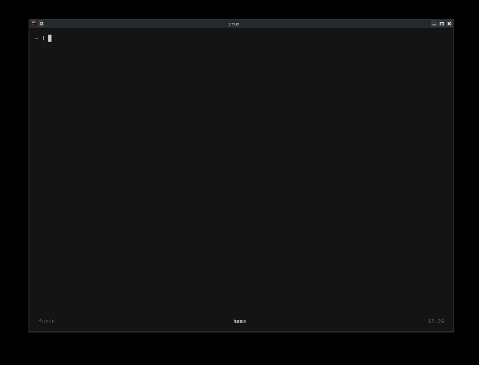
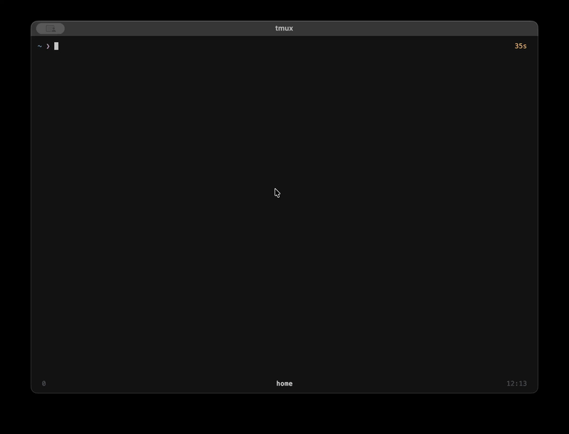

Fuzin: Terminal Paket Yönetiminde Fuzzy-Search Devrimi
Table of Contents
🚀 Proje Hakkında#
Fuzin, farklı işletim sistemlerindeki paket yöneticilerini (apt, pacman, brew, vb.) ezberleme zahmetinden kurtaran, fzf tabanlı interaktif bir terminal aracıdır. Bir siber güvenlik meraklısı ve fizik öğrencisi olarak, sistem yönetimini ne kadar hızlı ve otomatize yaparsak, asıl teknik detaylara o kadar odaklanabiliriz mantığıyla bu aracı geliştirdim.
📸 Demolar#
Fuzin’in farklı platformlardaki çalışma performansına göz atın:
| Linux (Debian/Arch) | macOS (Homebrew) |
|---|---|
 |
 |
✨ Öne Çıkan Özellikler#
- Otomatik Algılama: Sisteminizde hangi paket yöneticisi varsa (
apt,dnf,pacman,zypper,brew) onu otomatik olarak tespit eder. - Çoklu Seçim:
TABtuşu ile birden fazla paketi aynı anda işaretleyip toplu kurulum yapabilirsiniz. - Canlı Önizleme: Paketleri yüklemeden önce açıklamalarını ve versiyonlarını split-screen (bölünmüş ekran) üzerinden inceleyebilirsiniz.
- AUR Entegrasyonu: Arch Linux kullanıcıları için resmi depoda bulunmayan paketleri otomatik olarak AUR (
yayveyaparu) üzerinden arar. - Sıfır Bağımlılık: Sadece bir Bash scriptidir. Eğer sisteminizde
fzfyoksa, Fuzin bunu algılar ve sizin için kurmayı teklif eder.
🛠 Kurulum (Installation)#
Terminalinizden şu komutları sırasıyla çalıştırarak kurulumu tamamlayabilirsiniz:
# Repoyu klonla
git clone [https://github.com/Deniz-13/fuzin.git](https://github.com/Deniz-13/fuzin.git)
cd fuzin
# Çalıştırma yetkisi ver
chmod +x fuzin
# Sisteme global olarak tanıt (Önerilen)
sudo mv fuzin /usr/local/bin/fuzin
⌨️ Kullanım Rehberi (Usage)#
Fuzin, karmaşık parametreler yerine basit flagler ile çalışır:
1. Paket Arama ve Yükleme#
Herhangi bir argüman vermeden çalıştırdığınızda varsayılan olarak “Install” modunda açılır.
fuzin # İnteraktif yükleme modunu başlatır
fuzin -i # Aynı işlevi görür (--install)
2. Paket Kaldırma#
Sisteminizde yüklü olan paketleri listeleyip seçerek silebilirsiniz.
fuzin -r # Yüklü paketleri arayıp silmenizi sağlar (--remove)
3. Sistem Güncelleme#
Tüm paket yöneticisi depolarını tek komutla günceller.
fuzin -u # Paket listelerini ve sistemi günceller (--update)
4. Yardım ve Versiyon#
fuzin -h # Yardım menüsünü görüntüler (--help)
fuzin -v # Mevcut versiyonu gösterir (--version)
Gelecek Planları: İlerleyen aşamalarda ağ analizi ve siber güvenlik araçlarını (Nmap, Wireshark, Metasploit vb.) tek tıkla kurabilen özel “toolkit” listeleri eklemeyi planlıyorum.